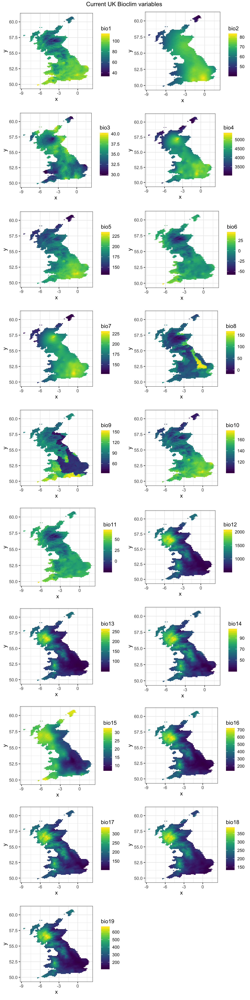

Species Distribution Modelling
# Load libraries
library(tidyverse)
library(lubridate)
library(caret)
library(raster)
library(reshape2)
library(viridis)
# Clear environment and set working directory
rm(list = ls()) We can use the Global Biodiversity Information Facility (GBIF) to gather presence records for the migratory hoverfly Volucella zonaria, also known as the hornet mimic hoverfly. In Great Britain, it was only known from two specimens prior to 1940, so was regarded as rare. Since then, it has become increasingly widespread in many parts of the South and South East England, often in association with parks and gardens, where adults are usually seen visiting flowers. Elsewhere across England, only a few scattered records exist.
The observation records were retrieved from the GBIF API, and the data cleanded as follows:
# load the data from a query to GBIF, for V. Zonaria
gbif_response <- read_rds("~/Documents/GitHub/ComputationalEcology/data_analysis_files/clim_data/gbif_volucella_zonaria.rds")
# Create presence records across decades
zonaria_clean <- gbif_response$data %>%
# get decade of record from eventDate
mutate(decade = eventDate %>%
ymd_hms() %>%
round_date("10y") %>%
year() %>%
as.numeric()) %>%
rename(y = decimalLatitude,
x = decimalLongitude) %>%
# clean data using metadata filters
filter(
# only records with no issues
issues == "" &
# let's take data from 2000 to 2020
decade %in% c(2010,2020)) %>%
# retain only relevant variables
dplyr::select(x, y, decade,scientificName) %>% arrange(decade)1 Covariates
Now we need to grab some environmental data. For this vignette we will use the worldclim database as this is directly available via the raster package. We can download 19 bioclimatic variables at 10’ resolution. They are coded as follows:
- BIO1 = Annual Mean Temperature
- BIO2 = Mean Diurnal Range (Mean of monthly (max temp - min temp))
- BIO3 = Isothermality (BIO2/BIO7) (* 100)
- BIO4 = Temperature Seasonality (standard deviation *100)
- BIO5 = Max Temperature of Warmest Month
- BIO6 = Min Temperature of Coldest Month
- BIO7 = Temperature Annual Range (BIO5-BIO6)
- BIO8 = Mean Temperature of Wettest Quarter
- BIO9 = Mean Temperature of Driest Quarter
- BIO10 = Mean Temperature of Warmest Quarter
- BIO11 = Mean Temperature of Coldest Quarter
- BIO12 = Annual Precipitation
- BIO13 = Precipitation of Wettest Month
- BIO14 = Precipitation of Driest Month
- BIO15 = Precipitation Seasonality (Coefficient of Variation)
- BIO16 = Precipitation of Wettest Quarter
- BIO17 = Precipitation of Driest Quarter
- BIO18 = Precipitation of Warmest Quarter
- BIO19 = Precipitation of Coldest Quarter
Let’s download data for the current bioclim a rasters:
# Load UK background mask
bg <- raster("data_analysis_files/UK_bg.grd")
# Reproject to lat/lon
bg <- projectRaster(bg, crs= "+proj=longlat +ellps=WGS84 +datum=WGS84 +no_defs")
# UK extent in lon/lat coordinates
ext_uk <- c(-12, 3, 48, 62)
# Get climate data for current date
filepath = "~/Documents/GitHub/ComputationalEcology/data_analysis_files/clim_data/"
bio_curr <- raster::getData('worldclim', var='bio', download=F, lon=-5, lat=55, res=5, path=filepath)
# Crop and reproject current climate
bio_curr <- crop(bio_curr, ext_uk)
bio_curr <- projectRaster(bio_curr, bg)
bio_curr <- resample(bio_curr, bg)
bio_curr <- mask(bio_curr, bg)1.1 Autocorrelation
Using adjacent cells in building a model can cause problems with spatial autocorrelation. We can therefore, thin the observations using the package spThin, as shown below. We set a minimum spatial distance between observations of 10km. The plot below shows the retained spatially thinned V. zonaria observations.
# Load library
library(spThin)
# Generate thinned data
thinned_zonaria <- thin(
# Observtion data to thin
zonaria_clean,
# Longitude and Latitude data
lat.col = "y", long.col = "x",
# Column that reperesents species
spec.col = "scientificName",
# Minimum distance (in km) that records should be separated by
thin.par = 10,
# The process is random, so repeat three times
reps=10,
# We dont wish to see or write the output
locs.thinned.list.return = T,
write.files = F,
write.log.file = F)## **********************************************
## Beginning Spatial Thinning.
## Script Started at: Mon Mar 30 11:15:19 2020
## lat.long.thin.count
## 89 90 91 92
## 1 3 4 2
## [1] "Maximum number of records after thinning: 92"
## [1] "Number of data.frames with max records: 2"
## [1] "No files written for this run."# Select sample with largest number of thinned 0observations
sample_index <- which.max(sapply(thinned_zonaria,nrow))
thinned_zonaria <- data.frame(x = thinned_zonaria[[sample_index]]$Longitude,
y = thinned_zonaria[[sample_index]]$Latitude) %>%
mutate(obs = "thinned")
# Make dataframe of background raster
bg_df <- as(bg, "SpatialPixelsDataFrame") %>%
as.data.frame()
# Name the dataframe columns
colnames(bg_df) <- c("value", "x", "y")
# Generate a plot of observations a cross the UK
rbind(thinned_zonaria, zonaria_clean[1:2] %>% mutate(obs= "full")) %>%
ggplot() +
geom_raster(data=bg_df, aes(x=x, y=y)) +
geom_point(aes(x=x, y=y, colour = obs),
size = 0.5) +
theme_bw() +
facet_wrap(~obs)1.2 Bioclim data
We can plot the current bioclim data - all 19 covariates:
# Function to generate individual plots
plot_bioclim <- function(df, name) {
ggplot(data = df, aes(x=x, y=y, fill = value)) +
geom_tile() +
coord_equal() +
scale_fill_viridis(name = name) +
theme(
plot.margin = rep(unit(0,"null"),4),
panel.spacing = unit(0,"null"),
legend.key.width = unit(0.01,"null")
) +
theme_bw()
}
# extract all bioclim values by xy
nested_bioclim_plots <- data.frame(rasterToPoints(bio_curr)) %>%
# Create single gouping variable by which to facet chart
melt(id = c("x","y")) %>%
# Nest data by bioclim variable
nest(-variable) %>%
# Create individual ggplots
mutate(plots = map2(.x = data,
.y = variable,
.f = plot_bioclim))
# Render plots
library(gridExtra)
margin = theme(plot.margin = rep(unit(0,"null"),4))
gridExtra::grid.arrange(grobs = nested_bioclim_plots$plots,
top="Current UK Bioclim variables ",
ncol = 2,
margin
)
For each bioclim variable, we want to extract its value for the location of each V. zonaria observation. We also need to create pesudo-absence data - this represents locations where no observations were made. The covariates then need to be joined to the location of each observation to give an overall dataset from which we can build our species distribution model for V. zonaria.
df_presence <- zonaria_clean[1:2] %>%
# Extract bioclim + lcm variables using long/lat
raster::extract(bio_curr, .) %>%
# Add extracted variables to long/lat
cbind(zonaria_clean) %>%
# Mark observation data as presence records
mutate(presence = 1) %>%
# Drop unecessary columns
dplyr::select(-decade, -scientificName)
# Function to pick raster cells at random from bioclim layers
raster_random_sample <- function(r_covars, n_samples, xy_coords) {
# Set seed for repeatable results
set.seed(12345)
raster::sampleRandom(
x = r_covars,
size = n_samples,
na.rm = TRUE,
xy = xy_coords)
}
# Sample background points (psedo absent?) from covariate raster
df_absence <- raster_random_sample(bio_curr, 100, T) %>%
as.data.frame() %>%
# Mark as background data
mutate(presence = 0)
# Create single dataframe for presence and absence data
df_zonaria <- rbind(df_presence, df_absence)2 Variable selection
In order to avoid collinearity we should remove covariates with absolute correlation of 0.8 or higher. We can achieve this by calculating a correlation matrix.
# Generate correlation matrix with covariates as correlates
cor_mat <- cor(df_zonaria %>% dplyr::select(-x,-y,-presence), method="spearman")
# Subset covariates that are highly correlated
highlyCorrelated <- findCorrelation(cor_mat, cutoff=0.8)
# Generate column names to remove
cols_to_remove <- names(df_zonaria[highlyCorrelated])
# Remove highly correlated variables from df
df_zonaria <- df_zonaria %>% dplyr::select(-cols_to_remove)
# What covarites are weekly correlated
head(df_zonaria)## bio2 bio3 bio4 bio5 bio8 bio9 bio11 bio15
## 1 64.48101 32.00000 4799.870 206.8308 75.69390 61.83747 39.77803 13.91587
## 2 64.48101 32.00000 4799.870 206.8308 75.69390 61.83747 39.77803 13.91587
## 3 61.46156 31.77255 4687.255 205.8329 80.00000 62.14391 43.53844 15.31099
## 4 61.46156 31.77255 4687.255 205.8329 80.00000 62.14391 43.53844 15.31099
## 5 72.06501 34.06501 4812.766 207.2257 78.24089 58.93499 34.00000 13.29069
## 6 72.06501 34.06501 4812.766 207.2257 78.24089 58.93499 34.00000 13.29069
## bio18 x y presence
## 1 162.2590 1.32073 52.59618 1
## 2 162.2590 1.32073 52.59618 1
## 3 168.0000 1.63029 52.76698 1
## 4 168.0000 1.63029 52.76698 1
## 5 147.0461 0.75289 52.01723 1
## 6 147.0461 0.75289 52.01723 1Now we have joined our environmental and observation data together into one dataset, we can begin to build a species distribution model. First we need to create a categorical response variable as we want to model presence v absence in space:
# last pre-processing step
df_modelling <- df_zonaria %>%
# caret requires a factorial response variable for classification
mutate(presence = case_when(
presence == 1 ~ "presence",
presence == 0 ~ "absence") %>%
as.factor()) %>%
# drop all observations with NA variables
na.omit()Before we undertake any machine learning, we need to split the data into training and test sets. We give 60% of the data over to training with the remainder used to test the model fit:
# for reproducibility
set.seed(12345)
# Create index for splitting
inTrain <- createDataPartition(y = df_modelling$presence, p = 0.6, list = FALSE)
# Create training dataset
training <- df_modelling[inTrain,]
# Create testing dataset
testing <- df_modelling[-inTrain,]3 Random Forest
Now we have removed the most highly correalted variables, we have nine bio_clim variables to as covarites to build a model fit. We’ll fit the model using a random forest. A Random Forest is a machine larning classifier that builds a number decision trees. The idea is to build a forest of uncorrelated decision, conditioned on our covariates. The resulting forest has an decision structure that can accurately classify our decision model; in this case presence or absence at a location, given a set of bio_clim covariates.
library(randomForest)
# Use five fold cross validation, repeated twice
tunecontrol <- trainControl(
# Use 5-fold cross validation
method = 'cv',
number = 5,
# Repeated cv 3 times
repeats = 3,
# Use a grid for hyper-parameters
search = "grid")
# Create tuning parameters as grid
tunegrid <- expand.grid(.mtry=c(3:9))
# for reproducibility
set.seed(12345)
# actual model build
model_fit <- train(
# Our formular for classifications
presence ~ .,
# Data to train the RF classifier
data = training,
# Train using a Random Forest
method = "rf",
# Return an accuracy metrix
metric = "Accuracy",
# Run the model using
tuneGrid = tunegrid,
trControl = tunecontrol,
# Normalise the covariate data
preProcess = c("center", "scale")
)
print(model_fit)## Random Forest
##
## 348 samples
## 11 predictor
## 2 classes: 'absence', 'presence'
##
## Pre-processing: centered (11), scaled (11)
## Resampling: Cross-Validated (5 fold)
## Summary of sample sizes: 279, 279, 278, 278, 278
## Resampling results across tuning parameters:
##
## mtry Accuracy Kappa
## 3 0.9338302 0.7305669
## 4 0.9338302 0.7305669
## 5 0.9338716 0.7279421
## 6 0.9395859 0.7546974
## 7 0.9367288 0.7427430
## 8 0.9424845 0.7686002
## 9 0.9338716 0.7331589
##
## Accuracy was used to select the optimal model using the largest value.
## The final value used for the model was mtry = 8.plot(model_fit) # Confusion matrix
# Confusion matrix
We can assess how good model predictions by generating a confusion matrix. This matrix shows a cross-tabulation of the observed and predicted classes, as well as a number of metrics that provide an inisght into how good the model predictions were compared to a reference data set. The referece dataset in our case was the reserved training data.
# Make prediction
pred <- predict(model_fit, testing)
# Generate confusion matrix
confusionMatrix(
# Predicted classification results
data = pred,
# Reference data - use partioned test data
reference = testing$presence,
# Definition of positive result
positive = "presence")## Confusion Matrix and Statistics
##
## Reference
## Prediction absence presence
## absence 25 8
## presence 15 183
##
## Accuracy : 0.9004
## 95% CI : (0.8544, 0.9358)
## No Information Rate : 0.8268
## P-Value [Acc > NIR] : 0.001174
##
## Kappa : 0.6265
##
## Mcnemar's Test P-Value : 0.210903
##
## Sensitivity : 0.9581
## Specificity : 0.6250
## Pos Pred Value : 0.9242
## Neg Pred Value : 0.7576
## Prevalence : 0.8268
## Detection Rate : 0.7922
## Detection Prevalence : 0.8571
## Balanced Accuracy : 0.7916
##
## 'Positive' Class : presence
## Some definitions:
- Accuracy - overall probability that a response is correctly classified. Accuracy = Sensitivity × Prevalence + Specificity × (1 − Prevalence)
- Sensitivity - true positive rate of the positive class. How well did the model detect presence?
- Specificity - true negative rate. How well did the model detect absence?
- Positive Predictive Value - probability that V. Zonaria is present when the model returns a presence
- Negative Predictive Value - probability that V. Zonaria is absent when the model returns an absence
We can see the accuracy is around 91%. So the model is looking good.
4 Plot prediction
Now we can now make a prediction for the current species distribution range for V. zonaria, using the bioclim covariates.
# Generate distribution data from raster to run model on
dist_dat <- data.frame(rasterToPoints(bio_curr)) %>%
# Select variables required for prediction
dplyr::select(head(names(training), -1)) %>%
na.omit()
# Set seed for repeatable results
set.seed(12345)
# Create a probability of presence/absence raster
r_pred <- rasterFromXYZ(
cbind(
# Coordinates to make prediction from
dist_dat %>% dplyr::select(x,y),
# Predict with RF species distribution model
predict(model_fit,
# Use covariates to run model against
dist_dat,
# Type of response variable
type='prob')))
# Create spatial dataframe for plotting
df_prob_presence <- as(r_pred[[2]], "SpatialPixelsDataFrame") %>% as.data.frame()
# Plot scenarios
df_prob_presence %>%
ggplot() +
geom_raster(aes(x=x, y=y, fill=presence)) +
coord_equal() +
scale_fill_viridis() +
theme_bw()
We see the range fo V.zonaira is largely confined to south of Liverpool, with a random dot around Glasgow.